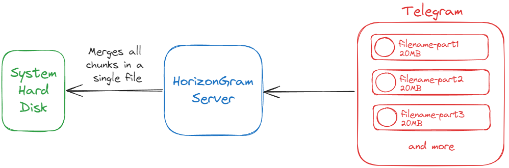

About
HorizonGram is an innovative application designed to leverage Telegram's cloud infrastructure to create a custom storage solution with unlimited capacity. This platform offers users seamless file upload, download, and monitoring capabilities, all through a user-friendly graphical interface powered by AI (ChatGPT).
By utilizing Telegram as the primary storage medium, HorizonGram ensures that users can store unlimited amounts of data without traditional limitations. Additionally, it integrates Firebase as a backend to store and manage essential metadata, enabling efficient file retrieval and reconstruction for downloads.
HorizonGram combines the best of cloud storage and AI-driven usability, providing a powerful, scalable solution for managing files with ease and efficiency.
Developed by Francesco Abate taking inspiration from this video.
How it works
HorizonGram leverages Telegram's cloud infrastructure through the use of a dedicated bot to create a custom, unlimited storage solution.
The application communicates directly with the Telegram bot, issuing commands such as uploading or downloading files. The bot then handles these tasks by organizing the files into specific topics within a Telegram group, ensuring the files remain structured and easy to manage.
HorizonGram interacts with the bot via Telegram's API, which acts as the communication interface for executing commands like file uploads and downloads.
However, due to the API's file size limitations, which are relatively low, HorizonGram employs a solution to manage larger files. Each file is divided into segments, with a maximum size of 20MB per portion, allowing the platform to bypass these restrictions and efficiently store and retrieve large data sets. The bot organizes these file segments into a dedicated Telegram group.
When a file download is initiated, HorizonGram retrieves all the individual segments stored on Telegram and merges them back together to reassemble the complete file. This reconstruction process ensures that users can seamlessly access and utilize their files as if they were never fragmented.
Each fragment is associated with a unique message ID on Telegram, as each file piece is stored as a separate message. To download and reconstruct a file, HorizonGram retrieves all the necessary message IDs corresponding to the file's fragments. These IDs, or metadata, are stored in Firebase Realtime Database, a cloud-based solution that securely tracks and manages all metadata for efficient file reconstruction and retrieval.
This metadata management ensures that HorizonGram can seamlessly reassemble the file from its fragments, providing users with smooth access to their complete files.